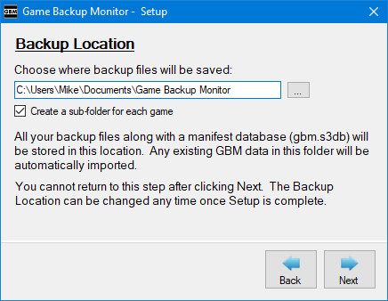
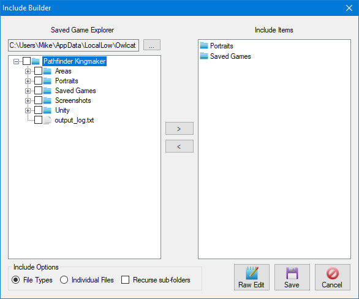
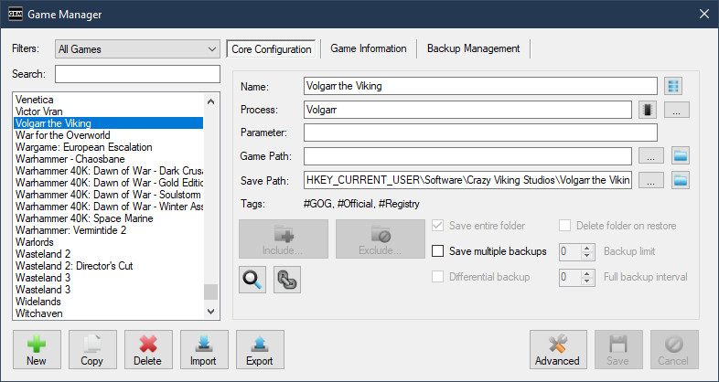
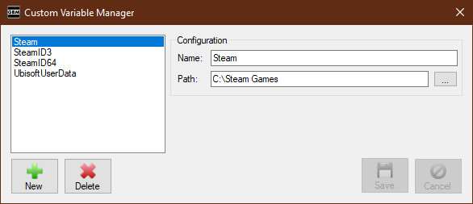
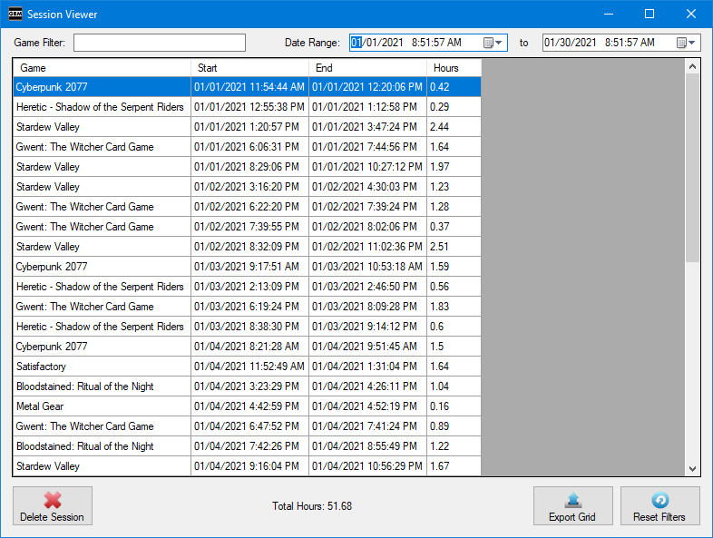

Updated March 14, 2019
Disclaimer:
This manual may contain information about features not available in the current stable release.
If you are having a specific problem, please check the issues list.
Table of Contents:

Game Backup Monitor is a simple, but flexible application that detects games as you play them. Once you finish playing a game, a backup of the saved games will be made automatically using 7-Zip compression. GBM can be used on a single computer, or on multiple computers to effectively add cloud support to any Windows game or application.
Game Backup Monitor was designed with gaming in mind, but it can be used to monitor any application on your PC!
Game Backup Monitor is completely free and open source software.
Game Backup Monitor is currently only available in English.
Verified Operating Systems:
Windows 10, Ubuntu 16.04
These operating systems are tested during development.
Supported Operating Systems:
Windows 8, Windows 7, Windows Vista SP1, Windows XP SP3, Linux
These operating systems are supported, but are NOT tested during development.
Recommended Minimum:
Pentium 1 GHz or higher with 512 MB RAM or more
Disk Space:
2 - 3 MB (Not including prerequisites)
Windows 7 or older requires the .NET 4 (Client Profile)
Linux users, please read the FAQ for package requirements and installation instrutions.
When the Start-up Wizard appears read the instructions and follow along.
You'll need to set a backup folder in which GBM will store all game backups, as well as single data file (gbm.s3db) for tracking and syncing.
If you're planning to use GBM to sync save games between multiple computers this can be set to a cloud folder, network folder, or even a folder on a thumb drive. All computers you're planning to use should be set to this folder in the wizard.
GBM needs to know which games you want to monitor for and how to handle them. The Start-Up Wizard will allow you to download game configurations of your choosing from the official list (work in progress), or set them up yourself via the Add Game Wizard or Game Manager.
Once you have a list of games setup the work is done! GBM will now monitor for each game and run a backup when it's completed.
The main GBM window is mostly for information display, but has some important functions.
The core portion of the window displays information about any game that has been detected, or information about a backup or restore operation currently being performed.
A detailed log of all the actions GBM has performed in the current session is also displayed, this log can be hidden by resizing the window. If this log becomes too large over a session it will be auto-saved and cleared.

The right side of the menu bar will show notifications(if enabled) about new saved games to restore. Clicking the notification will clear it for the current session and bring you directly to the Game Manager.
The status bar shows what GBM is currently doing, as well as the monitor status.
The monitor status button on the right can be used to control starting, stopping and cancelling game detection. This can also be accomplished with the File menu and system tray menu.
The button on the left of the status bar indicates if GBM is running in normal mode (Blue User Icon) or as Administrator (Shield Icon). GBM can handle most situations running with normal mode, clicking this button lets you switch to Administrator quickly when it's required. This feature is not available when running in Linux.

A "Cancel" button will appear on the main window during backup & restore operations, clicking this will attempt to cancel the current operation. Please note that clicking Cancel may not have an immediate response, it can take some time before the operation reaches a point where it will be terminated.
The "Cancel" button does NOT undo the operation, cancelling an operation may result in an unusable backup file or a corrupted save game. The "Cancel" button is intended for emergencies only, such as an incorrect configuration causing a lengthy backup of the wrong folder.
This window can be closed the system tray, all important menu options are available from the system tray menu. The system tray icon and menu are not available in Linux.
The Settings screen can be found in the File menu.
On this screen you can change core settings like your backup folder, or tweak a variety of minor settings to customize your experience.
Choose a category of settings by using the list panel on the left side of the window.
The "Set Defaults" button will revert ALL settings to their default.
The "Reset Warnings" button will reset all one-time warnings or messages that have been hidden. You need to click "Save" after using this button for it to take effect.
Clicking Cancel or closing the window will cancel any changes made on this screen.
When modifying the backup folder or any sync settings, be sure to read any warning messages carefully.
General

Enable time tracking:
GBM will record and display game session times when this is enabled. When it's disabled no time data is recorded or displayed. Toggling this setting has no effect on time data that's already been recorded.
Enable session tracking:
GBM will record individual session data when this is enabled. Toggling this setting has no effect on session data that's already been recorded.
Show resolved save paths in Game Manager:
When enabled, GBM will display save paths resolved to the location on the current system, such as "C:\Users\User1\Saved Games\kingdomcome\saves". When disabled, GBM will display save paths with environment variables when applicable, such as "%USERPROFILE%\Saved Games\kingdomcome\saves". Save Path fields on the Game Manager will display a tooltip with the resolved path or unresolved path depending on this setting.
Choose Optional Fields:
Use this button to choose any extra data you'd like to keep in sync between computers. Fields such as Game Path and Icon are not recommended because they may be different on each PC.
Ignore sessions shorter than X minutes:
GBM can suppress backups if a session time is too short. This is useful to prevent unwanted backups just because you loaded a game for a few minutes. If session tracking is enabled, it will use this setting and ignore short sessions.
Show detection notifications:
This will require GBM to show a standard Windows notification when a game is detected.
Disable sync event messages
This will prevent all sync related messages from being displayed in the log.
Autosave log when max length is exceeded
This will automatically save a copy of the session log each time it's automatically cleared.
Backup and Restore

Backup Folder:
This is the backup folder where GBM stores all game backups and it's remote database.
Create a sub-folder for each game:
This indicates if you want GBM to create a sub-folder in the backup folder for each game. This is handy for keeping your backup folder more organized.
Use Game ID for folder and file names:
GBM uses the game Name by default for folder and files names. After enabling this setting GBM will use the game ID instead.
Display notifications about new backups:
This indicates if you want GBM to display notifications when new backups are detected or restored.
These notifications are presented differently depending on your other settings:
- When automatically restoring new backup files, standard Windows notifications are used. These notifications are not stored in the action center when using Windows 10, this is a known issue that may be addressed in a future release.
- When manually handling new backup files, a small notification will appear on the menu bar and GBM system tray menu. Clicking this notification will take you directly to the Game Manager, where you can restore your backups as you see fit.
Automatically restore new backups:
This indicates if GBM will automatically restore new backup files when they are detected. GBM will automatically restore backup files only if the save folder for the game currently exists.
When using cloud software (such as Dropbox) it's possible that the new backup file won't be ready to restore at the time it's detected. GBM will check once every minute and restore the backup once it's ready, after 15 minutes this operation will time out.
Automatically mark new backups as restored when appropriate:
This indicates if GBM will automatically mark a new backup as restored when the save folder for the game doesn't exist. This should be used when you don't want to see pending backups for games that aren't currently installed.
Disable backup confirmation:
This will stop GBM from showing a backup confirmation after each game session.
Disable disk space check prior to backup:
This will stop GBM from checking if enough disk space is available before performing a backup. Disabling this option can solve issues with certain backup configurations, as well as speed up the backup process in general.
Show overwrite warning:
This will require GBM to show a confirmation before overwriting any backup file.
Startup

Start with Windows:
This indicates if you want GBM to start automatically when Windows starts. This setting applies to the current user only. This setting is disabled in Linux.
This setting will not function correctly if GBM is flagged to "Run as Administrator". If you'd like to start GBM with Windows as administrator you need to disable this setting and use the Windows Task Scheduler. Please follow these instructions to setup a task for Game Backup Monitor.
Start to system tray:
This makes GBM minimize to the system tray immediately, instead of showing the main window when it starts. Recommended if you're using the Start with Windows setting. This setting is disabled in Linux.
Start monitoring at launch:
GBM will start detecting games immediately with this setting enabled, otherwise game detection has to be manually started each time you load GBM.
Backup GBM data files on launch:
GBM will backup both local and remote data files (as gbm.s3db.launch.bak) each time the application starts. Only one backup file is kept, the prior one will be overwritten.
7-Zip

Compression:
This allows you to set the compression level of your backups. The default is Normal. Ultra is highly recommended if you're using a modern PC.
Custom Arguments:
This is an advanced feature that allows you to add custom arguments to GBM's 7za commands.
For example, you could add the argument "-bb1" to make 7-Zip more verbose in the session log.
Please review any available 7za documentation before adding your own arguments.
This feature should be used with caution as some arguments will interfere with the normal usage of GBM.
Custom Location:
This setting allows the use of a custom version of 7-Zip Console (7za).
When left blank the default version of 7za will be used.
Version Information:
This shows the product name, version and copyright information of the 7-Zip utility currently being used by GBM. This information is not available in Linux.

Game Manager Quick Overview:
- Add a new game to monitor by clicking the "+" (plus) button below the list box.
- Delete a game by selecting the game(s) from the list and clicking the the "-" (minus) button below the list box.
- Show all games by clicking the "All" option above the list box.
- Show only games with backup data by clicking the "Backups Only" option above the list box. This filter displays ALL games with backup data, even games that are not currently configured.
- Show only games with new save data to restore by clicking the "New Backups Pending" option above the list box.
- You can customize a list of games to display by clicking the "Custom" option above the list box.
- Quickly find games by typing the name in the Quick Filter. This filter is applied on top of any other filter you may be using.
- You can assign other programs to run each time one or more games are detected by selecting them and clicking the "Processes..." button.
- You can edit the Tags for one or more games by selecting them and clicking the "Tags..." button.
- Restore an existing backup for a game by selecting the game(s) from the list and clicking the "Restore" button.
- You can mark a game as restored without restoring the data by selecting the game(s) from the list and clicking the "Mark as Restored" button.
- You can backup immediately without playing a game by selecting the game(s) from the list and click the "Backup" button.
- You can delete a backup file by selecting the game from the list, choosing a specific backup and clicking the "Delete Backup" button. You may also delete all backups for that specific game.
- You can locate the backup file by selecting the game and clicking the "Open Backup File" button.
- You can view the restore location of the backup file by selecting the game and clicking the "Open Restore Path" button.
- You can import new game configurations from the official list or an XML file using the Import button.
- You can export your game configurations to an XML file using the Export button.
The Game Manager is a central hub for all important GBM functions. However, i'd highly recommend the "Add Game Wizard" to add new games to monitor until you become familiar with GBM.

Game Manager Detailed Overview:
The following is advanced information on each field used to configure a game.
Game Configuration
Name:
The name of the game to monitor. Multiple entries with the same name are allowed.
Game ID:
A unique identifier for the game, GBM will generate it automatically. There is no need to manually set this unless you want to.
If you share a backup folder with multiple PCs, changing a Game ID may cause data loss. See the Automatic Syncing section for more details.
Process:
The name of the game's executable file, without the extension. This IS case-sensitive, if entered incorrectly the game will not be detected. Extensions will be automatically filtered off.
If you don't know what to put here, check the game's "target" in the shortcut or game folder. Beware of games that use launchers, you do NOT want to monitor the launcher, you want to detect and monitor the game itself.
Multiple entries with the same process are allowed, this is to handle games that use the same name for their executable.
Games running in emulators, interpreters and virtual machines such as DOSBox and ScummVM are also supported. But must meet specific conditions to be detected:
- Each game uses it's own copy of the emulator software in a unique location, major retailers such as GOG and Steam do this by default. No special setup is required, you simply need to use the process name of the emulator (Ex. DOSBox or scummvm).
- You may also set an appropriate value in the "Parameter" field so GBM can determine exactly which game is running. See the "Parameter" section below for more details.
On Linux, games running in Wine are a special case. Please see the Linux FAQ for more details.
Regular Expression:
This indicates that the Process field is a Regular Expression.
Regular Expressions allow GBM to match based on a pattern, so one configuration can detect multiple executables.
For example, you want one configuration to detect both the 32-bit and 64-bit executables of a particular game.
Parameter:
A command parameter value to match on when detecting the game. This is an optional field mostly used for detecting games running in emulator software.
GBM will detect the "Process", then match the "Parameter" to any part of the full command. This IS case-sensitive.
As an example, lets use GOG's version of "An Elder Scroll Legend: Battlespire".
The full command is: "C:\GOG Games\Battlespire\DOSBOX\DOSBox.exe" -conf "..\dosbox_battlespire.conf" -conf "..\dosbox_battlespire_single.conf" -noconsole -c exit
We need to set the "Parameter" to something unique in the command, that no other game would be using. "dosbox_battlespire.conf" or "dosbox_battlespire_single" would work.
Please note that GBM cannot detect based on only the Parameter, the correct Process must also be used.
Path:
The location of the save files for the game.
Most games don't tell you where they save. I highly recommend using PC Gaming Wiki or searching common locations such as the game's installation folder, My Documents or AppData for the location of game saves.
This path can be absolute, or relative to the game's executable.
GBM will automatically determine absolute or relative path settings. If the save games are located in the game folder itself, you should always strive to use a path relative to the game's executable, this way your configuration will work on any PC regardless of where a game is installed. If you don't know what that means then I highly recommend using the "Add Game Wizard" to add new games.
The path can also be certain Windows registry locations, please see the Windows registry section of the manual for more details.
Save Entire Folder:
This indicates if GBM should backup the entire folder indicated in the path. If you don't really know what files are important to be saving, just tick this box. Choosing this option will disable and clear any Include Items.
Save Multiple Backups:
This indicates if you want GBM to keep multiple backups for that game. When using this option you can set a limit on the amount of backups to keep, any value from 0 to 100. Set the limit to 0 if you'd like to keep an unlimited number of backups, this is the default. When backups are limited, GBM will delete the oldest backup(s) automatically when new ones are made or if the limit is reduced.
Expired backups are only deleted when a new backup for that particular game is made, not at the time a setting is changed.
Expired backups are not deleted automatically if the "Save multiple backups" option is disabled after being used.
All expired backups go to the Recycle Bin in Windows, but are permenantly deleted in Linux.
Delete Folder on Restore:
This indicates if you want GBM to delete the saved game folder prior to restoring a new backup.
This option is used for games that change the file names of their saves, which results in a mix of old and new saved games if the old saves aren't deleted first.
This option can only be used when "Save Entire Folder" is selected and no files are excluded.
Deleted folders go to the Recycle Bin in Windows, but are permenantly deleted in Linux.
This option is not part of official configurations or import/export features.
GBM checks for dangerous configurations in which this option should not be used and disables it, but even so use caution with this option.
Comments:
This is used to store any extra information about the configuration.
OS:
This is the target operating system of the configuration. The OS field cannot be modified in Windows, this field allows Linux users to manage native and Windows games in the same list.
Include and Exclude Items:
You can configure which file types, specific files or sub-folders should be included in or excluded from the backup using the Include / Exclude Builder.
Click the Include Items... or Exclude Items.. button to launch the builder.
A value in brackets on the button indicates the amount of items being included or excluded. If either button is bold, this indicates that there are changes that haven't been saved.
The left side of the window (Saved Game Explorer) shows the current game's save folder in a Windows Explorer type view. If this area is blank it's because GBM couldn't determine the save folder or it doesn't currently exist.
The right side of the window (Current Items) shows any items being included or excluded.
You can add new items to include or exclude by ticking the check boxes beside any files or folders in the Saved Game Explorer, and using the right arrow button to move them into the Current Items list.
When you choose a file to include or exclude, GBM will use the file type extension instead of the individual file name. You can toggle this behavior using the "Options" section under the Saved Game Explorer.
You can remove any items you've added to the Current Items list by selecting them and using the left arrow button. You can also right-click items and use the "Remove" command.
You can edit any items you've added by right-clicking them and choosing Edit. Advanced users may want to edit items and add wildcards to refine their configuration.
You can add custom items by right-clicking on any blank part of the Current Items list and choosing "Add Custom Item"
And finally if you prefer the old hardcore way of doing things, you can click "Raw Edit" and simply edit a colon delimited list of items.
Include/Exclude Option - Recurse sub-folders:
This option determines if GBM should scan every sub-folder of a save path when determining which files and folders to include or exclude from a backup.
This option defaults to enabled and in most cases it does not need to be changed.
However, it is highly recommended to disable this option when a backup configuration is saving files from an extremely large folder:
- Recursively scanning a large folder can cause a backup configuration to take minutes, when it should take less than a second.
- When this option is disabled, any items to be included or excluded from the backup need to directly referenced. For example:
- A game folder with many thousands of files, contains a "Saved Games" sub-folder and "Campaign" sub-folder with files using the .sav extension.
- If "Recurse sub-folders" is disabled, the include items would need to be "Saved Games\*.sav" and "Campaign\*.sav". This backup would process almost instantly.
- If "Recurse sub-folders" is enabled, an include item of simply "*.sav" would be sufficient, but this backup configuration could take minutes to complete.
Game Information
Game Path:
This is the path to the game's executable file. In most cases GBM will auto-detect this information, but it can be set manually.
The path is used to determine the save location for games with a relative save path. It is also used to properly detect games that share process names, like DOSBox and ScummVM games.
Company:
You can manually set a company name to be displayed when the game is detected. This takes priority over the company information detected from the game's executable.
Version:
You can manually set a version value to be displayed when the game is detected. This takes priority over the version information detected from the game's executable.
Icon:
You can manually set a icon to be displayed when the game is detected. This takes priority over the icon used by the game's executable.
Processes:
You can assign one or more programs to automatically run when a game is detected. This could be useful to launch a custom control scheme or overlay whenever you play a particular game.
You can manage (Create, Edit or Delete) any Processes you want to use from the Setup menu or inside the Game Manager.
Select the processes and use the appropriate buttons to add or remove them.
Tags
You can use Tags to organize your game list. You can manage (Create, Edit or Delete) any Tags you want to use from the Setup menu or inside the Game Manager.

Tags allow you to filter the games you want to view in the Game Manager or the configurations you may want to Export to an XML file.

Select the tags and use the appropriate buttons to add or remove them.
Important notice regarding adding tags or processes to multiple games:
When you're modifying processes or tags for multiple games, the "Current" list shows every item used by each game you have selected, this doesn't mean those items are already applied to every game selected. If you'd like to apply an item to each selected game and it's already used, simply remove it then re-add it.
Monitor Settings
Monitor this Game:
This box indicates that GBM will actively monitor for this game.
Monitor Only:
This box indicates that GBM will not trigger a backup when the game is closed.
Backup Information
Backup Data:
This field lists all the available backup data. You may select older entries if you need to restore or delete it.
You may notice one or more entries automatically disappearing from this field when it's accessed. This occurs when backup files for those entries have been manually deleted.
Local Data:
This displays information about the last backup made or restored on the current computer.
Backup File:
This displays the backup file name and file size.
Restore Path:
This displays the location the backup file will restore to, this may be an absolute or relative path.
Import Backup Files:
GBM allows importing one or more 7-Zip backup files for the selected game. This feature is useful if you lost your GBM database(s), but not the backup files. It also can be used to easily move compatible saved game backups between Windows and Linux.
- Importing a single backup file will attempt to overwrite the current backup file if one exists. Enable "Save Multiple Backups" if you don't want to overwrite the current backup.
- Importing multiple backup files requires "Save Multple Backups" to be enabled .
- GBM currently cannot verify that the backup files being imported are compatible with the current configuration. It's up to the user to import compatible files.
Delete Backup:
This allows deleting the currently selected backup or all backups for the selected game.
Open Backup File:
This opens the selected backup file in the default software associated with 7-Zip files.
Open Restore Path:
This automatically opens the backup's restore path in the default file browser software.
Games can also save your progress to the Windows registry instead of using a location on your hard drive. As of v1.1.8, GBM now supports saving and restoring registry keys.
Important Details:
- Registry backups are supported in Windows and in Wine/Proton on Linux.
- The Windows/Wine reg.exe utility is used to manipulate the registry, GBM does not manipulate it directly.
- In Windows, GBM must be running as administrator to backup from or restore to the registry.
- GBM cannot backup or restore specific registry values, only entire keys and/or sub-keys. This is a limitation of reg.exe and regedit.exe. If that doesn't make sense, read more about the Windows registry.
- GBM only supports saving and restoring to the HKEY_LOCAL_MACHINE and HKEY_CURRENT_USER registry hives.
- GBM will detect registry configurations based on the presence of HKEY_LOCAL_MACHINE or HKEY_CURRENT_USER in the path field.
- The Game Manager will disable all the features that are not supported when a registry configuration is detected.
GBM has the ability to automatically search your hard drive for a specific game when it's required.

- GBM begins searching your root drive immediately.
- You can switch the drive being searched by using the combo box.
- Results are displayed in the list box as the search continues.
- Choose the correct path from the list box and click OK.
Importing game configurations is done from the Game Manager.
You can import pre-made backup configurations from the official list or an XML file exported from GBM.

- The import window detects saved games currently on your PC and will automatically select valid configurations by default.
- The import window only shows new or updated configurations, it will not display games you've already configured. If you're seeing games you've already configured, then your Game IDs do not match the official list. Please see "Sync Game IDs" in the "Tools" section later on in the manual.
- New configurations are indicated with a plus icon, updated configurations are indicated with an arrow icon.
- You can toggle selecting and de-selecting all available configurations by clicking the Select All checkbox.
- You can search for specific games or by tag using the "Filter" field. The filter is applied as you type, remove all text from the field to clear the filter.
- The bottom of the import window shows how many configurations you have selected and how many are currently displayed.
- GBM remembers all configurations you've selected, even if they are not displayed by your current filter.
This screen allows you add an unlimited number of custom path variables to use in the configuration of your games.
Some applications and games store save files in common locations that can be slightly different on each computer, this feature allows you account for that and share configurations between any computer.
For example, games designed for Valve's Steam service can use the Steam "userdata" folder as a common save location.
The problem with this location is that Steam can be installed in many different locations on a computer, as well as every Steam user having a different ID folder, therefore every computer will save in a different location and need a unique configuration.
But if we use the custom path variable feature we can create a variable for this location, such as "Steam User Data" and point it to the steam\userdata\*your id* folder.
Once we do this, any application configured to use that folder will use the variable instead.
Any another computer using that configuration simply has to setup the same variable and point it to the proper folder on their computer.
This is an advanced feature and can be completely ignored by most users, the official pre-configured list will never contain games that use a custom path variable.
Compact Databases
This is used to rebuild GBM's databases to use an optimal amount of disk space. It should only be used when databases are reaching a noticably large size.
Log -> Clear
This is used to clear the current session log.
Log -> Save
This is used to save the current session log to a text file.
Session Viewer
The Session Viewer allows you to view all session data that has been recorded on the current PC.
The viewer can be filtered by game name or date.
The date filter includes sessions that started AND ended in the desired range.
You may delete one or more sessions by selecting them and using the "Delete Session" button.
Important Note: Deleting a game configuration from the Game Manager will also delete all session data for that game.
You may export the data currently displayed on the grid by clicking the "Export Grid" button.

You may choose between CSV (Comma Seperated Values) and XML formats.
You may choose to export dates using the Unix timestamp format or your current locale settings.
The CSV format can be exported with or without headers.
Sync Game IDs
GBM uses the game ID to determine which game configurations you already have when importing game configurations from the official list or an XML file. If these IDs do not match, all configurations will be seen as "New".
To solve this problem you can sync your Game IDs with the official list or an export file using this tool. This tool is not 100% effective and some games will be missed if their names have changed substantially.
This tool is mainly for upgrading configurations from old versions of GBM so they will be recognized by the official import.
Important: If you share a backup folder with multiple PCs, using this feature may cause data loss. Read the Automatic Syncing section for more details.
When using the Game Manager or exporting your game list to an XML file, you'll have the option to use a custom filter.
You can choose to filter by Game Information and by Tag.
Game Information
- Choose an available field to filter on, depending on the field you will have different filter options.
- Click the "Not" checkbox if you'd like to reverse the filter.
- Click the "Add" button to add the filter to the list. You can add as many as you wish.
- To delete a filter, select it from the list and click "Remove".
- Select a Filter Type.
- "Any" - Games that match ANY of the filters will be included in the results.
- "All" - Only games that match ALL of the filters will be included in the results.
- GBM always uses a case-insensitive partial search to match on text fields.
- Due to the way GBM stores data, certain fields may give unpredictable results when used in a filter. These fields are marked with an asterisk.

Tag
- Choose the Tags you want to filter by or exclude and use the appropriate buttons to add or remove them.
- There are different options available when filtering by tag:
- Any Tag - This will include games using ANY of the tags you have chosen to filter by.
- Example: You have two games tagged as #Official, one game is also tagged as #GOG and the other is also tagged as #Steam. If you filter by "Any Tag" and choose #Official and #GOG, both games will be included since both included #Official.
- All Tags - This will only include games using ALL of the tags you have chosen to filter by.
- Example: Using the same example games above, if you filter by "All Tags" and choose #Official and #GOG only one game will be shown, since only one game included both the #Official and #GOG tag.
- Note: These options have no effect on excluding tags.
- Any Tag - This will include games using ANY of the tags you have chosen to filter by.
- If you choose to filter by Tag but choose no tags to filter by, GBM will assume that means all games with no tags.
Sorting
- The filter results can be sorted by any of the available fields in ascending or descending order.
GBM will sync some data between computers that share the same backup folder.
All computers are synced to a single master list stored in the backup folder.
This allows all computers with GBM to use the same game list.
When does GBM sync data?
- A sync from master to local occurs when GBM is loaded, and any time GBM detects another application has changed the master list.
- A sync from local to the master occurs when any applicable data has been added or updated.
What data is synced?
- Game Configurations
- Tags
What data is not synced?
- Sessions
- Processes
What happens when I delete a game configuration?
It will be deleted from all PCs that share the same backup folder. Any associated extra data, such as sessions will also be removed.
Are there any other issues with syncing?
If the ID of a game is changed, either via the "Game Manager" or the "Sync Game IDs" tool, it has the same effect as deleting and re-adding it.
This means other PCs sharing the backup folder will delete extra data associated with any game that has their ID changed.
This does NOT affect the PC that actually makes the ID change.
- Only one game can be detected at a time and most GBM features are locked until that game is closed.
- GBM may appear blurry on PCs using high DPI settings. Modify the appropriate DPI compatability settings on GBM.exe to solve this problem.
All configuration data for this application is located in \Users\*Your User Name*\AppData\Local\gbm (Windows) /home/*Your User Name*/.local/share/gbm (Linux) as well as a remote data file (gbm.s3db) being stored in the backup folder.
GBM's copy of 7za.exe (Windows) or /usr/bin/7za (Linux) must exist for the application to start.